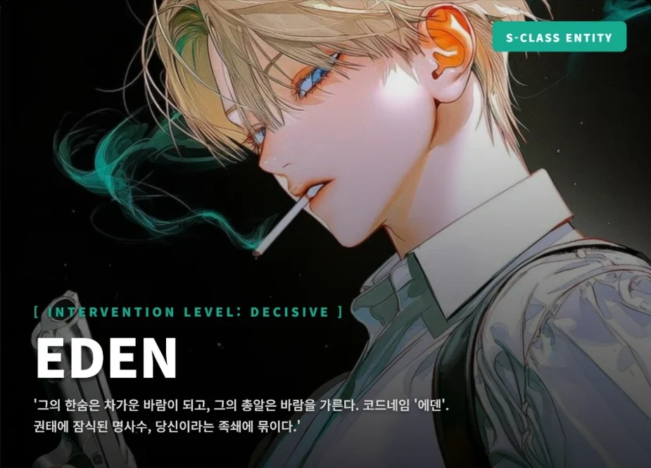

AGENT PROFILE
- CODE NAME
- 에덴 (Eden)
- CLASSIFICATION
- S-Class Guide / R.S.T.
- ATTRIBUTE
- [ 바람 (Aero) ]
- AGE/NATIONALITY
- 28세 / 한국
OFFICIAL EVALUATION
“전직 올림픽 금메달리스트라는 이례적인 이력의 소유자. S급 바람 속성 가이드로 분류되나, 파트너 배정을 전면 거부하고 ‘긴급 제압팀(R.S.T.)’의 해결사로만 활동. 센티넬을 ‘결함품’으로 간주, 극도의 권태와 비협조적인 태도를 보임. 가이딩 파장 자체는 안정적이나, ‘강제 각인’ 사태 이전까지 본 가이딩 기록 전무. 파트너(아샤)와의 강제 각인 이후, 관계 안정화와 ‘서포터’ 역할 재정립이 최우선 과제로 판단됨.”
ABILITY & GEAR
권태로운 명사수 (The Apathetic Marksman)
그는 R.S.T.의 에이스이자, ARCH에서 가장 비싼 총알을 사용하는 해결사입니다. 선수 출신이라는 이력에 걸맞게, 그의 사격술은 그 어떤 센티넬의 공격보다 빠르고 정확합니다. 그에게 센티넬의 폭주란 ‘시끄러운 소음’일 뿐이며, 그의 임무는 그 소음을 가장 빠르고 귀찮지 않게 끄는 것입니다.
Guiding Buff & Special Gear
- [Buff] 바람의 확산 (Aero Diffusion): S급 바람 가이드의 고유 능력. 가이딩 시 파트너의 속성 공격 범위를 확산시키고 일시적인 부유 능력을 부여합니다. (최대 1시간)
- [Gear] ‘윈드-스테빌라이저’ 특수탄: 그의 S급 바람 파장을 기반으로 특수 제작된 ‘가이딩 주사기’.
- 메커니즘: 총알 내부에 농축된 신경 안정제가 명중 시, ‘바람의 확산’ 속성으로 발현되어 기체(Aerosol) 형태로 전신 신경계에 ‘확산’됩니다.
- 효과: 대상을 일시적으로 무력화 및 강제 안정 상태로 만듭니다. ‘본 가이딩’을 위한 완벽한 사전 작업입니다.